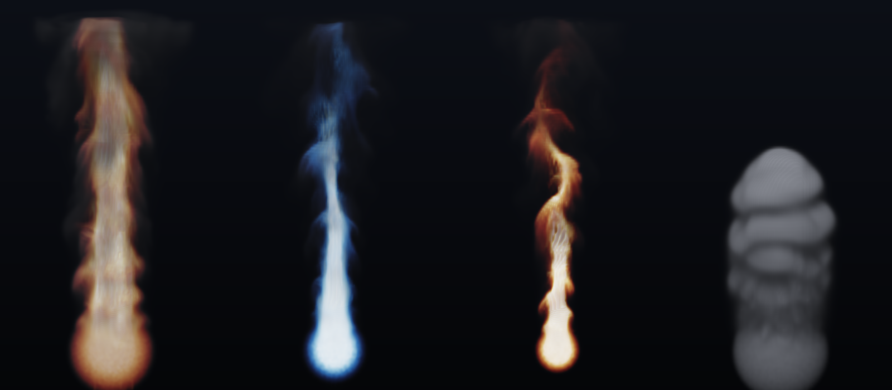

/ lab
3D 煙・炎リアルタイム GPU シミュレーション
128³ の3Dグリッドで煙と炎の動きを計算し、毎フレーム描画するデモです。
流体計算、炎の発光、ボリューム描画、煙の自己影、調整用 UI を、自作ゲームエンジン MitiruEngineの DirectX 12 コンピュート機能に実装しました。
概要
速度、煙の密度、温度、圧力を3Dテクスチャに保存し、GPU上で更新します。計算結果を CPU に戻さず、そのままボリュームレイマーチで描画します。
浮力、冷却、乱流、発光、色はウィンドウ内のスライダーから変更できます。複数の設定を横に並べ、同時に比較する機能も用意しました。
実装した処理
グリッド流体計算
Stable Fluids を用い、速度場を「移流、外力、圧力射影」の順に更新します。移流には semi-Lagrangian 法を使用しました。
体積を保つ流れにするため、速度の発散からポアソン方程式を作り、Jacobi 法を40回反復して圧力を求めます。その圧力勾配を速度から引き、煙の密度と温度を更新します。
渦 confinement
グリッド計算による数値拡散で細かな渦が失われるため、速度場から渦度を計算し、渦を強める力を加えています。
温度による炎の色
温度を、暗赤、赤、橙、黄、白へ変化する色に対応させて発光を計算します。温度の尺度と色テーブルは変更できます。
ボリュームレイマーチと自己影
カメラから伸ばした光線に沿って3Dグリッドをサンプリングし、煙による吸収と炎による発光を積算します。吸収には Beer–Lambert の法則を使います。
各サンプル位置から光源方向も調べ、届く光の量を求めることで煙の自己影を描画します。

複数設定の比較
独立したシミュレーションを最大4つまで横に並べ、同時に実行できます。表示数と各表示枠のプリセットはウィンドウ内で切り替えられます。
参照した手法
グリッド流体には Stam の Stable Fluids（1999）、煙と渦 confinement には Fedkiw ら（2001）、炎には Nguyen ら（2002）、GPU によるリアルタイム3D計算には GPU Gems 3（2007）を参照しました。